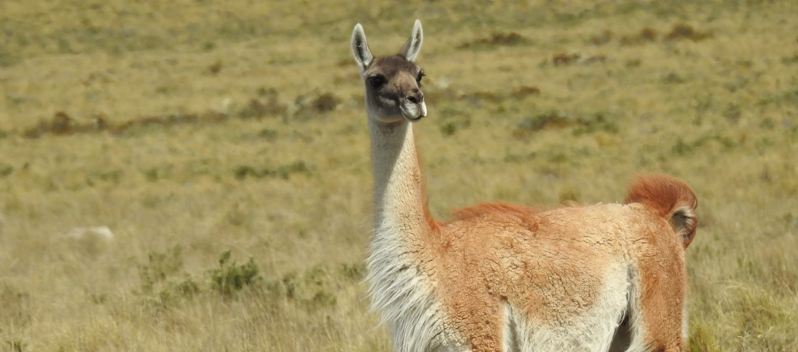
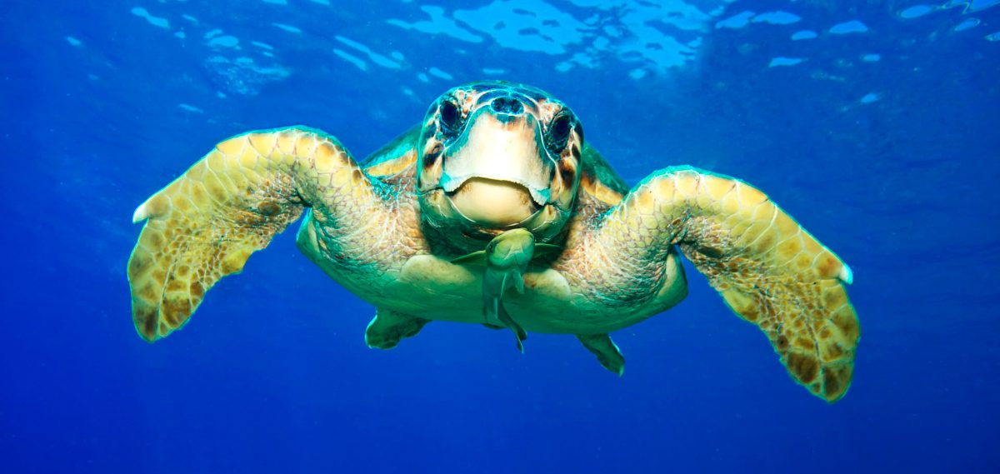
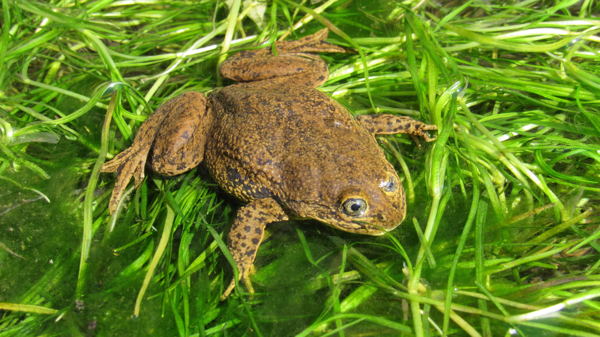

.png)
Descubre Chile a través de tus propias garras...
Descubre Chile a través de tus propias garras...
La cantidad de especies endémicas en Chile que están en alguna clase de peligro ha aumentado a niveles críticos durante los últimos años, provocando que la perdida de biodiversidad se convierta un real problema. Entre sus principales causas se encuentra el desconocimiento de dichas especies y de sus ecosistemas, lo que provoca que cada día más se intervenga dentro de su territorio, ya sea por consciencia o inconsciencia de los humanos.
3nDemic busca ser una herramienta para la concientización de este problema, dando a conocer a las especies principales en peligro y las dificultades a las que se exponen día a día.
3nDemic es un videojuego en realidad virtual para estudiantes de enseñanza básica sobre la fauna chilena, buscando describir las problemáticas de estos animales y sus vidas, con un enfoque de entretención y aprendizaje.
La utilización de videojuegos como sistema de aprendizaje ha sido comprobada científicamente como una excelente forma de adquirir conocimiento, principalmente en estudiantes de enseñanza básica.
La utilización de tecnologías avanzadas como la realidad virtual permite al estudiante visualizar el hábitat del animal y sentirse parte del entorno.
Los usuarios que utilicen el videojuego podrán completar los juegos con otros usuarios que estarán jugando, logrando compartir experiencias y hacer las misiones en conjunto.